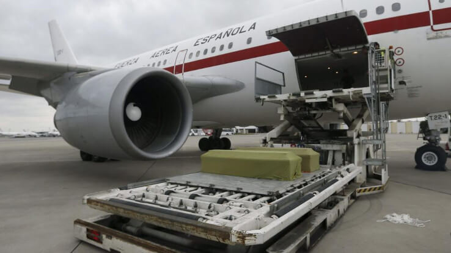
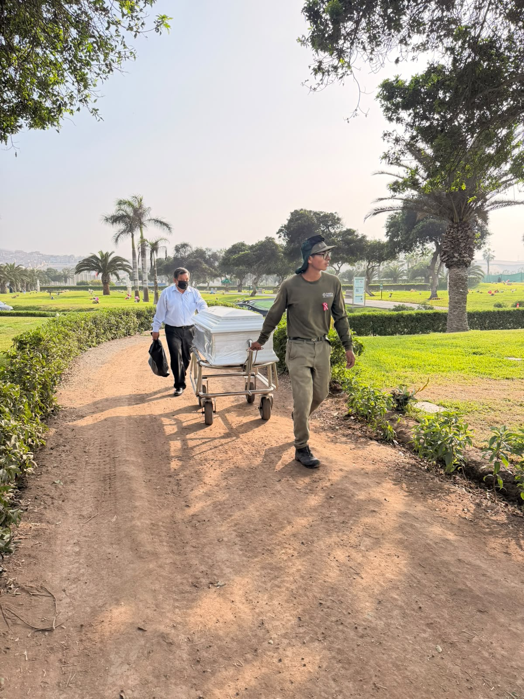
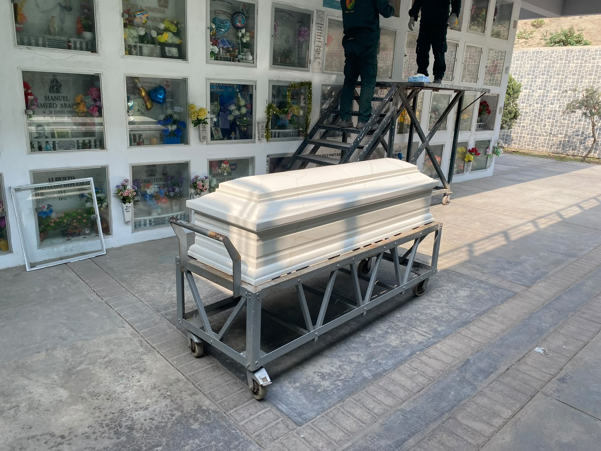

Gestionamos la repatriación de restos humanos desde el extranjero hacia el Perú, coordinando los procedimientos y trámites necesarios para hacer posible el traslado.

Este servicio contempla la coordinación con las entidades y operadores involucrados, tanto en el país de origen como en el Perú, brindando a la familia acompañamiento durante todo el proceso.
Llamar ahoraDurante todo el proceso, la familia cuenta con orientación y acompañamiento permanente de nuestro equipo.

